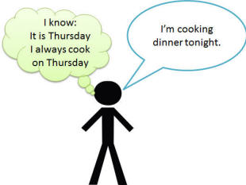
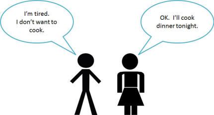
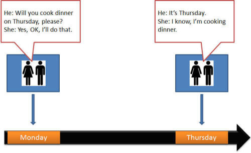
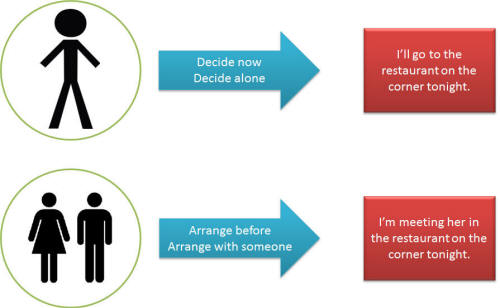
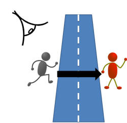
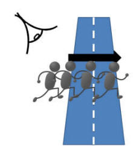

Being clear
A key skill for an English language teacher, especially one whose setting requires only the use of English in class is to make instructions, explanation and corrections clear and unambiguous, whatever the learners' level. Mostly, it comes with experience but this guide is designed to short-cut some of the more painful learning.
 |
Getting the instruction across |
 |
 |
Task 1: To start off, which of the following do you believe is the easiest alternative (A or B) to understand for elementary students and why? |
| A | B | |
| 1 | Please push the door to | Please close the door |
| 2 | You need to listen carefully | Please listen carefully |
| 3 | Please see me here later if you want to enter the examination | Do you want to take the examination? Yes? See me later |
| 4 | Please be on time. It’s very important | It’s really important to be on time |
| 5 | Hand in your answers now | Give me your answers now |
| 6 | What did you do? | What have you been doing? |
| 7 | OK. Groups of three. You three, you three, you three and you three [gestures] | Now I'd like you to get into teams of three people |
| 8 | Right. Page 55 [shows book page] | Please look at page 55 in your coursebook |
Click here when you have made a note of some ideas.
- B is easier. The verb close is simple and straightforward. The separation of push and to is difficult to follow.
- B is again easier. The verb need has a quite complicated grammar. Here, it is used for obligation but at lower levels many learners will only know its meaning of require.
- B again. There are a number of issues with Sentence A:
- it has three pieces of information crammed into it and 3 verbs
- It has a subordinating conditional structure with if
- it uses the slightly unusual meaning of enter (which in many languages would be rendered by do or make)
- Sentence A is easier. The message is broken into two distinct halves. The use of the to infinitive following the adjective and including a prepositional phrase is actually quite difficult to get.
- Sentence B again. We have a multi-word verb in sentence B (hand in) which may not be understood from its constituent parts.
- Sentence A is easier. Complex tenses with two auxiliary verbs are hard to understand.
- Sentence A is certainly less polite, although tone and facial expression will make it courteous, but it is easier to understand. Sentence B relies on people being able to ignore the I would like you to and understand the word teams.
- Simply saying what the target is and holding it up is very much more effective than embedding the instruction in sentences.
General rules
- Avoid multi-word verbs, such as come along, hand in, speak up etc., at lower levels. They are routinely misunderstood.
- Avoid politeness phrases such as I would like you to ... or What I would like you to do is ... . They are redundant in instructions and muddy the message. You can be friendly and polite by facial expression and tone of voice.
- Avoid complex tenses when simple ones will do.
- Demonstrate and show people what is required whenever you can.
- Break messages down and try to avoid coordinating or subordinating conjunctions (like but, and or if, when respectively).
This may all seem rather obvious but it is surprising how often simple rules are forgotten under stress.
Making instructions clear is a real skill that many almost never master. The first step it to look at your lesson plan and script exactly what you are going to say for each stage for which you need to give an instruction. After a while, it becomes automatic.
 |
Explaining |
The general rule
There are those who will tell you that Teacher-Talking Time (TTT)
is always A Bad Thing. It is not necessarily true but the
quality of
teacher talk is important. See the guide to teacher talk,
linked below, for more on this.
The general rule is to try to keep your talking to a minimum by
explaining things graphically and by eliciting as much as you can
from your learners. You know the answer and your job is to get
your learners to see it.
It is not your job to talk about language or give mini-lectures.
|
|
|
Task 2: There are four things that a good explanation has to be. Can you think what they are? |
Click here when you have made a note of some ideas.
- Clear
- This is obvious. An explanation that the learner doesn't understand wastes everyone's time. Whenever possible, use a variety of media to explain: visuals, questions, mime, sound etc.
- As complete as possible
- It is not always possible to provide all the information and it is not always desirable to try. What is needed is called a pedagogical explanation, i.e., one that provides the necessary amount of information bearing the level of the learner(s) in mind. Overloading learners is as bad as confusing them.
- Unambiguous
- Learners do not, especially at more elementary levels, want
to hear
You can sometimes say this
Well, it depends
or
In some cases that's possible
Certainty is what they crave. - Checked
- There is little point in giving an explanation unless you check that you have been understood. Just asking, "OK?" or "Do you understand?" is inadequate because in many cases you'll get the answer, "Yes" when the right answer is quite possibly "No" or "I'm not sure".
Some exercises and examples
|
|
Task 3:
How would you explain the difference between
I'll cook dinner and I'm cooking dinner at A2
level? Click here when you have an answer. |
|  |  |
| but you have to follow it up with questions like this: | |
| In picture 1: Who usually cooks on Thursday? (He does) Does he know it's Thursday? (Yes) Is he deciding now? (No) So, it's an arrangement. They know he's cooking. |
In picture 2: What's the problem? (He's tired) Does he want to cook? (No) When does she decide to cook? (Now) So it's a decision now. She decides now to cook. |

Of course, a quick sketch on the board won't look as tidy.
It's the message that's important.
The key point to get clear is when things are decided: in
advance or right now, arranged or not.

Try another one
|
|
Task 3:
How would you draw a sketch to explain the difference between I saw him cross the road and I saw him crossing the road at B1 level? Click here when you have an answer. |
|  |  |
| I saw him cross the road | I saw him crossing the road |
But you have to follow it up with asking questions:
What's the difference between "He crossed the road" and "He
was crossing the road"? (The first one was finished)
Did you see him get to the other side? (Yes or no,
depending on the picture)
Was the action finished? (Yes or no, depending on the
picture)
etc.
S o, if you see all the action, we use the
simple tense. If we only see some of the
action, we use the -ing form.
Now give me an example with a postman and
letters, please.
(I saw him deliver the letters [and then he left] vs.
I saw
him delivering letters [and he was doing it for a long time])
Time lines won't help here because the time is the same.
 |
Questions from learners |
Try some more
Here's a set of common language questions. Think
about how you would explain the issue and then click on the
 to reveal some ideas.
to reveal some ideas.
| What's the
difference between I am working in London and I work in London? |
Time lines will help a bit to show that the first
one is a temporary state and the second is more
permanent. There is
a guide to
using time lines on this site.
It will also be helpful to elicit or supply the fact that the speaker knows when the work will stop in the first one but probably not in the second. The first type of sentence will also often be used with a time adverbial such as this year, at the moment, for a few months etc. Which do you say: I am studying English this year or I study English this year? |
| Is I'm drinking coffee with John tomorrow correct? |
Grammatically, yes, but most English people say "I'm
having coffee".
We can do the same with meals, e.g., "I'm having lunch with a friend next Thursday". Can you make some sentences with these words: dinner, a beer, a bath, a shower, a holiday, a bit of trouble etc.? Can you think of any more examples when we use 'have'? (This may also be an appropriate time to point out that we can't use the meaningless got with the verb in this sense.) |
| Is He has gone to America right? |
Tell me more.
Is he in America now? No? Then you say "He has been to America (in his life)". Has he come home now? Yes? Then it's "He went to America". You only want 'has gone' when someone has left and not come back. Can you think of someone who has gone somewhere? Where is she now? |
| What's the
difference between high and tall? |
They both mean 'long' but up and down not side to
side. Like this:
long is this way: ↔ and tall and high are this way: ↑. The noun is important. 'high' is used for big things like mountains or buildings but we use 'tall' for living things like people, trees and so on. What would you use for these words: skyscraper, TV mast, John, glass, plant, church tower? |
| Which is
better: put off or postpone? |
They both mean the same thing: change something so
you do it later. Which one do you think is formal
and which one informal?
Which one do you write in a business letter? In an email to a friend? In a conversation with me? What do you think is the difference between cancel and call off? |
Notice that the explanation is clear but the teacher always checks that it has been understood.
 |
Errors |
There is a guide devoted to mistakes, slips and errors, linked below, which you can go on to now, if you like.
| Related guides | |
| error essentials | it's just as important to be clear and unambiguous when correcting learners and this guide considers how that's done |
| using time lines | the guide concerning being clear about time and tense |
| error | for a guide to how to recognise, classify and respond to error |
| context | whatever the type of activity or task you use, context is something to strive for to promote clarity in presentations |
| teacher talk | for a guide to what teacher need to be able to do with language to be simply, clear and unambiguous |
| asking good questions | to see how questions should be posed to make the most of their use in the classroom |
| dealing with error | for the guide to correction techniques and correction policies |
| learner talk | for a guide to the other side: what do learners need to be able to do in the classroom? |